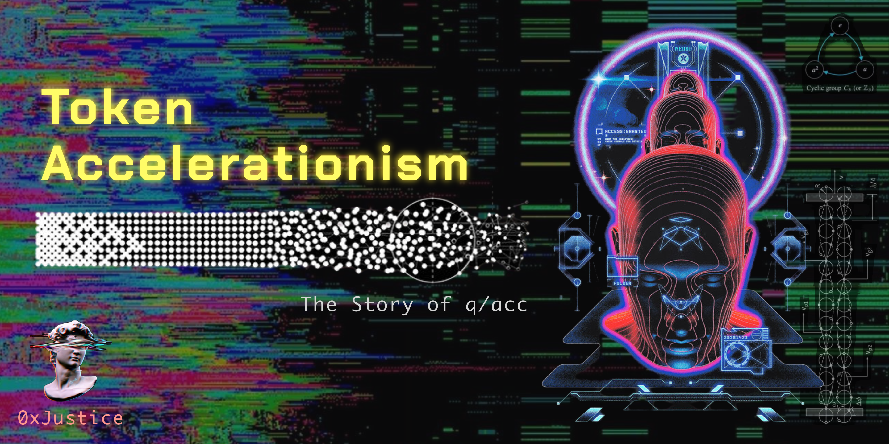
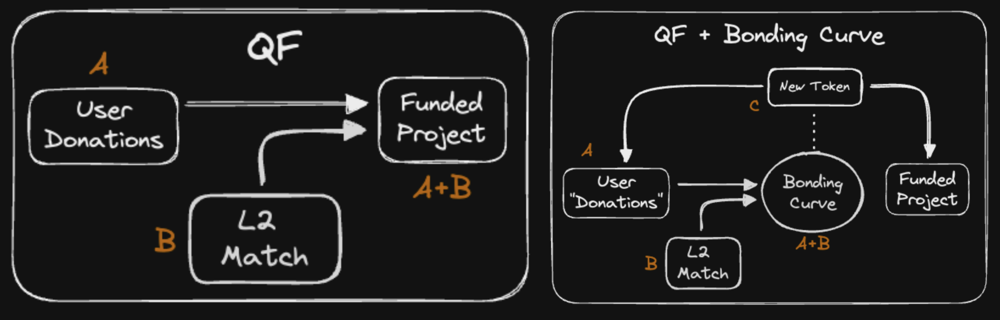
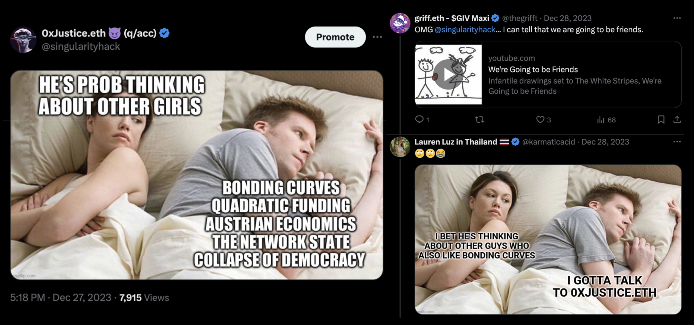
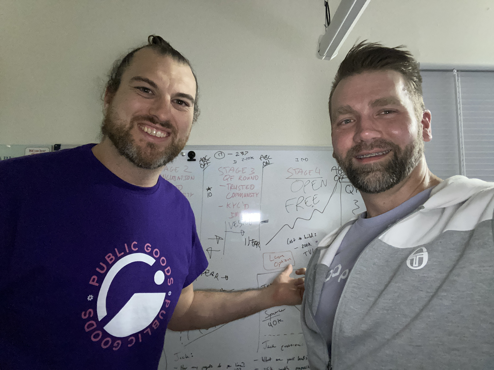
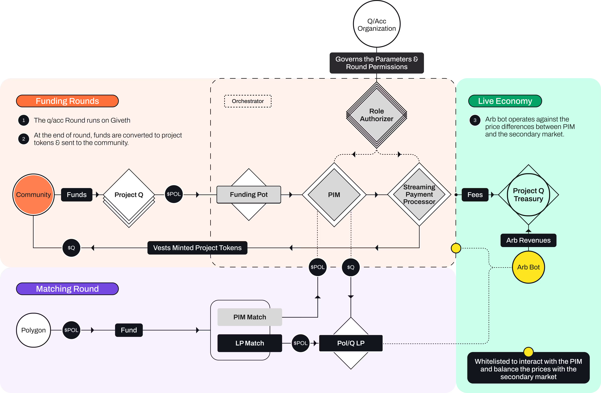
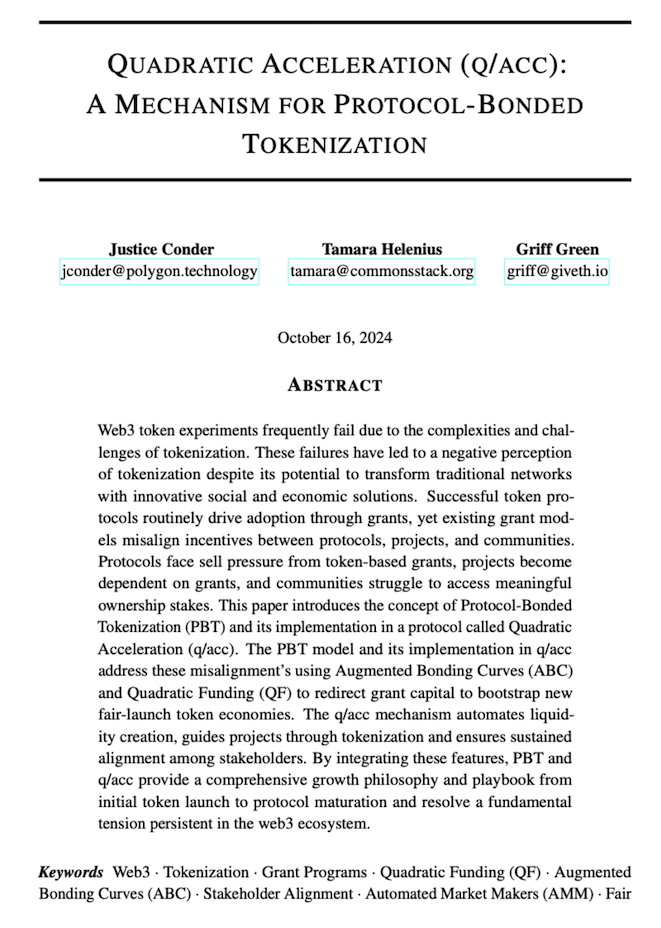
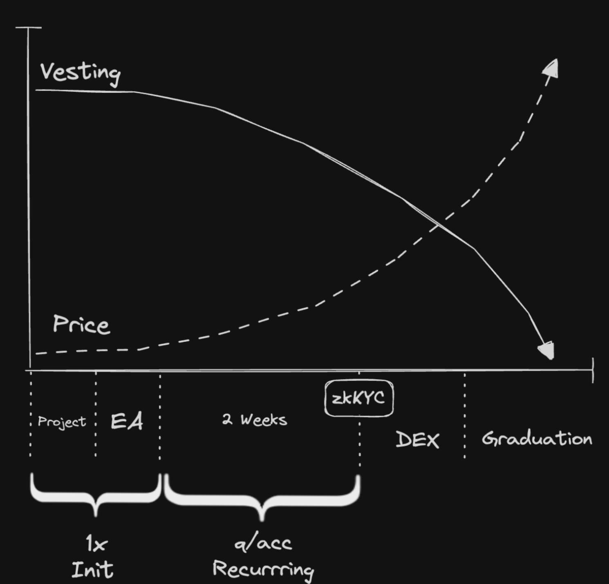
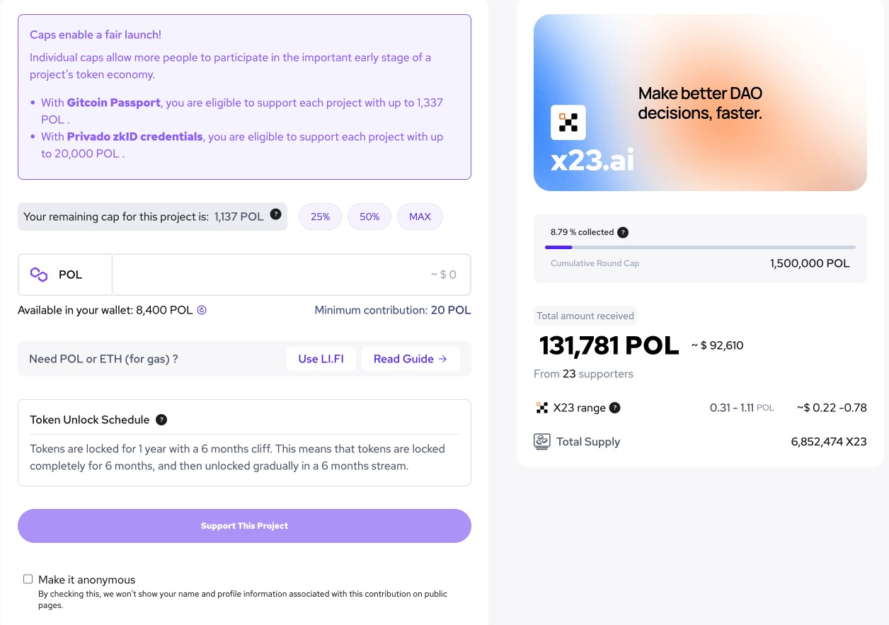
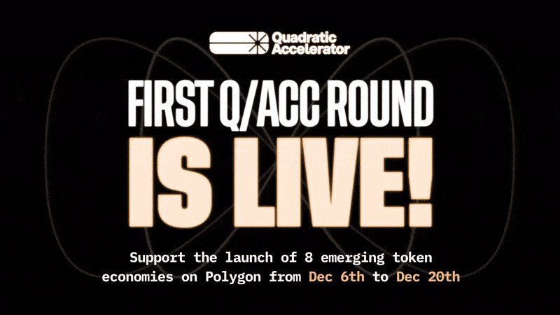

Token Accelerationism: The Story of q/acc
Originally published at https://paragraph.com/@0xjustice/token-accelerationism-the-story-of-q-acc

I’m thrilled to announce that my team and I have officially launched our first major Web3 product: The Quadratic Accelerator (q/acc). In this post, I’ll share the journey behind its creation and what makes this product truly unique.
Over the past three years, I've almost exclusively written about DAOs, but I’ve arrived at a few conclusions that have taken my interest away from DAOs and towards tokenization.
Two big conclusions are that DAO governance only works when people have substantial ownership and only if the governing group is relatively small (Dunbar limits). This reinforces my conviction that DAO tooling is ideally suited to corporate governance. I suspect DAOs will make a comeback as a broader area of interest, but they’ll be leveraged with smaller groups or used as engagement/participation tools for larger groups.
A second and probably more controversial conclusion is that economics is the purest form of governance. Reading Hoppe’s “Democracy: The God that Failed” and Curtis Yarvin’s neo-reactionary writing brought home this point.
What happens when private ownership, trade, and exit become the main thing, not collective decision-making? Then tokenization becomes the real nut to crack. You can read more about the idea and importance of exit here:
https://operator.mirror.xyz/jXA8yh5QmD4b7ESdup72YPS9j_SQknmxjGvpCVsj9v8
Tokenization is the “main thing” because if you can easily tokenize value and agreements, you can have people express arbitrary preferences and make predictions of other people's choices. No one has provided a turnkey tokenization framework. Sure, we can launch tokens, but a larger framework for how to do it and its significance is absent. There’s no broad philosophical underpinning. I spent years on DAO committees issuing grants, hoping the funded projects would return the benifits but found there is no way to create incentive alignment without tokenization.
The only way to create incentive alignment outside of tokenization was with legal agreements, which assumed another set of requirements. Legal entities in compatible jurisdictions needed to exist, and the owners couldn’t be anonymous. Parties had to have a trustworthy source of arbitration in the event of a dispute. Add to this my growing skepticism of the web3 public goods narrative and a newfound obsession with Austrian Economics, and the stage was set for an epiphany.
The Idea
What if we tokenized projects early and often? What if it was easier to tokenize than creating an LLC on LegalZoom? And what if the success of projects directly drove demand for their token? This led me to ask what the most sophisticated tokenization method was, and that brought me to the idea of combining Quadratic Funding (QF) with Bonding Curves (BC).
A direct grant is a one-time event. Nothing happens if the project fails, and the projects must sell the token to cover expenses, so no long-term relationship is created between stakeholders. Quadratic Funding (QF) is better than a direct grant because it includes project supporters and increases the available funds, but the process does not create a new net surplus. Nothing new is made when it's over. The total amount received by the project is the exact sum of the donations plus the grant.

Diagrams from Oct 23
But look what happens when we add a bonding curve to the mix and thus “tokenize” the funded project. A new token is created with a reserve that guarantees a floor price. Any excess in the price of C above AB represents the expectation of the project's success and future value. The team is incentivized to provide updates and progress because they rely on token C's price to fund continued building. This was the kernel of the idea I was cooking on in October 2023, when a few tweeted memes changed everything.
The Team
I was rapidly reaching the limits of my technical sophistication on this idea when I shared this meme, which kicked off some hilarious responses from Lauren and Griff, whom I had never really met before.

https://x.com/singularityhack/status/1740135161906262125
About a week after Christmas wrapped up, I found Griff's Telegram and asked to pitch him the idea. We spoke for 15 minutes, and he said he would mull on the idea over the weekend. Two days later, he suggested flying to me (in Ohio) and spending the week unpacking on the idea. My mind was blown. I called off work, shut the lid of my laptop, and picked Griff up from the airport. We spent several days doing nothing but talking about the issues. It was incredible. Griff had already been thinking about the contours of this approach because it was very similar to the Giveth “Gurve” idea. About two days into our jam session, he said I had to meet someone named Tamara.

Feb 7, 2024
Tamara (Tam) had co-founded CommonsStack the Token Engineering Commons and was extremely versed in the bonding curve space. From that day forward, the three of us met daily to design the vision and product that would become q/acc. We knew we needed an extremely technical and advanced team to implement what we were designing, and fate would have it that we all had a mutual friendship with a group called Inverter. This was pretty nuts because I learned about Inverter and became friends with them in April of 2023. I distinctly remember telling my mentor, Marco, that Polygon should drop everything and buy them. That's how confident I was that they were extraordinary.
The Build
The Inverter team has been a joy to work with, and I’m convinced their mindset toward Primary Issuance Markets (PIMs) will redefine token engineering norms in the coming years. For the next several months, together, we built the q/acc specification and the implementation. Checkout this diagram and article from Inverter on the q/acc mechanism:

https://www.inverter.network/blog/introducing-the-qacc-protocol
Simultaneously, Tam, Griff, and myself were deep in the weeds of writing the q/acc paper. It's lighter on the maths than it should be, but perfection is the enemy of progress, and I’m confident we’ll beef it up in a v.2. Tam was tireless in pushing the team to maintain momentum, and we owe Suga a special shout-out because she challenged us to be clearer at every step. Left alone, I would have produced a philosophical manifesto, but cooler heads prevailed, and we opted for a more neutral, technical document. We are so proud of how it turned out.

https://cdn.prod.website-files.com/667d6bc0b1e956f8d0b52c92/671a9d6f3bbff2f4d648e809_qacc.pdf
The Product
It took an army to produce q/acc. The Giveth community rallied around the vision, and General Magic pulled out all the stops to design our brand and the app. And, of course, this was only possible with a grant from Polygon. This happened because people like Ajay, Marc, Trunzo, and Roc trusted our vision and ability to execute.
It’s easy to get lost in the technicalities, but fundamentally, q/acc seeks to replicate existing and well-known market dynamics onchain.

Not totally accurate but sufficient for illustrative purposes
Chains offer incentives (just like governments) to strategically attract businesses in the hope of attracting more residents. Projects apply for those incentives, and q/acc (the program) selects ~10 every quarter to participate. Grant money is used to bootstrap a bonding curve, and the initial tokens generated by that deposit go to the team. The team can then strategically grant minting access to key partners through an Early Access (EA) window. Then, the main public round is held, where any verified person can mint tokens. At the end of the round all tokens are listed on a DEX. When projects reach a certain threshold of liquidity and stability, they graduate the curve, and the collateral is given to the team thus creating a huge incentive for participants to keep pushing. This also avoids a sudden sell pressure on the team's native token. I encourage you to read the paper for more technical detail.

q/acc project support page UI
The most important thing to understand is that this pattern realigns the three meta stakeholders of web3: protocols, projects, and communities. The q/acc construction turns a fundamental internal tension of the web3 ecosystem into a reinforcing flywheel of growth. This is a zero-to-one repositioning, and I don't think it’s possible to fully grasp its significance yet. I get really excited for what this means for the lifecycle of new chains and protocols. I touched on this in my talk in Brussels, which was our first public talk on q/acc:

The Theory
What we’ve built with q/acc is philosophically significant because history displays a pattern. Humans use token economies to bootstrap new token economies—the dollar was bootstrapped by gold and eventually outgrew it. Today, the dollar's market cap is 5x that of gold. I’m not saying the dollar is managed well, but the pattern is clear once highlighted.
Similarly, Ethereum bootstrapped its token economy with Bitcoin. The bonding curve and q/acc in particular formalizes this pattern by providing the risk/reward curve, an explicit and programmably collateralization ratio, and the production of new tokens. If you remove any prejudice towards “fiat,” you can see that all token economies are fundamentally similar. If people believe in a new system, they can pledge the token of another established system to get the utility or upside in the new economy.
With q/acc we’re trying to abstract and generalize this idea and make it available in all blockchain contexts. One serious question is how we can make this available to the general public. Initial Coin offerings (ICOs) have been off-limits for many years. This is where we’re being extremely audacious. We believe we can reintroduce the ICO dynamic through a pure DeFi-native mechanism. This would exclude many of scams the first ICO craze presented and posit a new legal context for the subject. Notice the differences. With q/acc:
-
Tokens are minted, not sold by humans
-
Prices and supply are managed by smart contracts, not humans
-
Cap tables are fully transparent and onchain, not on legal documents or in whitepapers
-
Built-in vesting parameters, not regulators, provide protections
-
Decentralization is enforced by Quadratic distribution, not pie chart
Every startup should have a north star vision. Something that causes people to pause and marvel at the vastness and significance of what you’re doing. Something that drives you to get out of bed early everyday and persevere through obstacles and opposition. For me, that vision of q/acc is to create the ecosystems tokenization primitive. We have a token swap primitive in the DEX, but there is, as of yet, no token creation primitive. I won't discuss how we plan to do that, but this is the vision. From the average user's standpoint, we created a short video that briefly describes what q/acc is:
A New Meta
Timing is everything. Being too early or too late has the same result as being wrong. On this point, we are beyond fortunate. There could not be a better time for q/acc than now. Protocols realize that airdrops, as the primary means of token distribution, are extremely wasteful and damaging. Projects are exhausted from the grant farming grind they’ve been on for years, and communities are pulling back on QF donations.
Add to this an entirely different regulatory landscape, and we have all the ingredients for greater crypto economic freedom. Users are tired of getting overpriced seconds from VCs. They want a fairer and more equitable access to new projects. This is demonstrated by the meme coin craze. While gambling will always be a permanent fixture of web3, I strongly believe meme coins represent a capitulation on legitimacy. If and when legitimate projects can issue tokens directly to the public safely, I think we’ll see a radical pullback from meme coins. Why mint a nameless, meaningless “dog with a hat” when you can mint the next Ethereum at a sub-million dollar market cap?
Two new but prominent projects that prove this point are Echo and Legion. Both provide earlier and greater access to the public to invest in projects and promote fairer access as part of their messaging. Yet both are ambiguous about a specific token launch mechanism. For this reason, I’m hopeful there could be a synergy between q/acc and these groups in the future. They emphasize the vetting and management of the investor class, and q/acc can manage this class programmatically during the EA round. The critical takeaway is that q/acc creates price charts that move from bottom-left to top-right deterministically which has a powerful impact on holder psychology.
Conclusion
We opened the round on 12/6, and it runs until 12/20. We’re only a few days in, and the attention has been good, but we have a long way to go before we can call it a success. I would ask all my readers to support at least one project and report back any issues or recommendations you may have. The most significant point of friction I think we have right now is very few people with Eth and POL on zkEVM. If you want to participate but don’t have the needed tokens, message me, and I’ll send you some. We have exciting plans to abstract this issue away in future seasons so stay tuned.

The first q/acc Round is officially LIVE! 
Eight projects.
One protocol.
A chance for you to gain early access to community-driven token economies on @0xPolygon zkEVM from the start, with a 250k matching pool that amplifies your support!
Join here: q-acc.giveth.io

 131[
131[
6:38 AM • Dec 6, 2024
](https://twitter.com/theqacc/status/1865013005995643298)
I am overwhelmed with gratitude toward my co founders, Griff and Tam. Their intelligence, energy, experience, and personal commitment to the q/acc vision has been overwhelming. I’m also grateful to the people who have minted my writings on this blog over the years. If you like my work and this story has sparked something in you, go check out the projects in this first q/acc round. They’ve been super brave to be the first monkeys in this spaceship and they need your support. Mint their tokens.
Also, watch Griff bring the fire in this talk given at Aggregation Summit in Bangkok last month. You can't see me in the video but I was jumping up and down next to the audience; I loved the talk so much:
Originally published on 0xJustice.eth